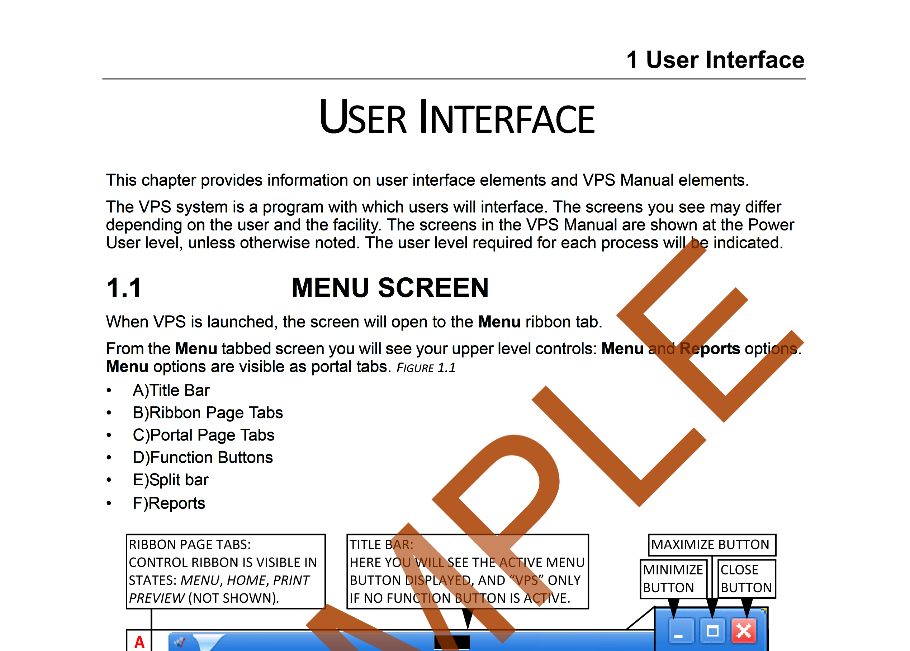
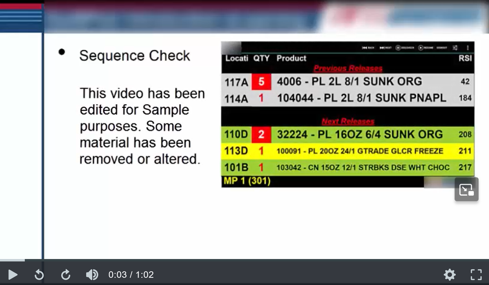
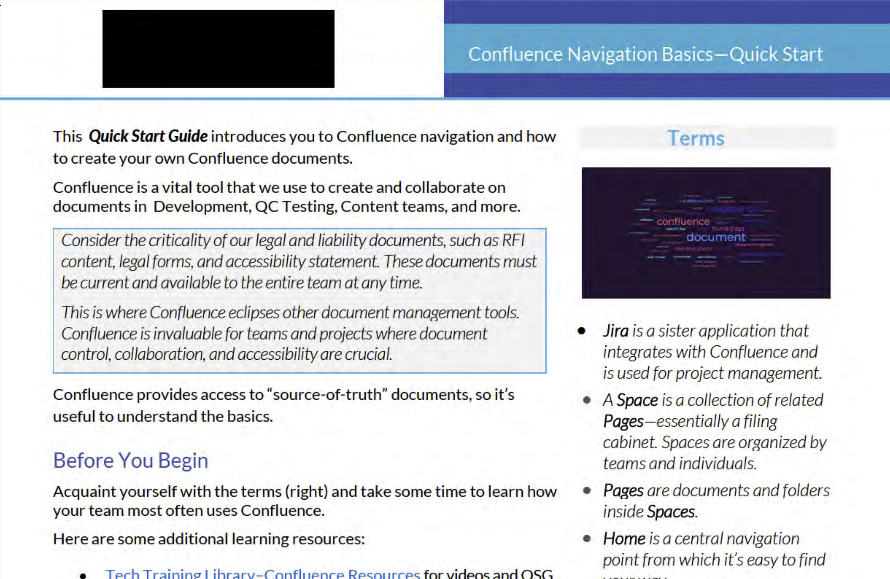
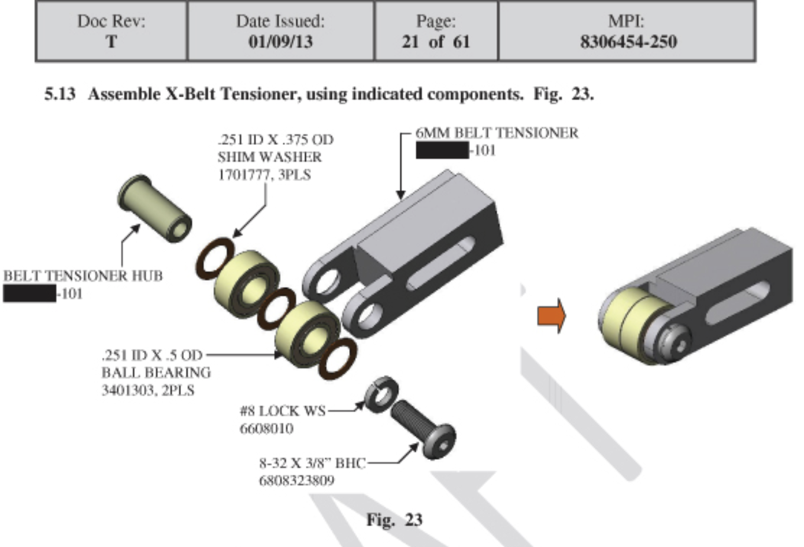

Slider in CSS
<
>

UI Document

Video of software using emulator and triggering from MySQL

Sample of Confluence Quick Start Guide
Sample of Instructional Design Video

Sample of Document using Modeling software (solidworks)